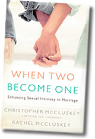

Christopher McCluskey is a popular speaker, licensed counselor, certified sex therapist and a professional life coach. He's also the founder of Coaching for Christian Living and teaches at the Institute of Life Coach Training. He is the cofounder of the American Board of Christian Sex Therapists and of the Institute for Sexual Wholeness, a master's-level training program for Christian counselors. Chris produced the highly acclaimed video Coaching Couples into Passionate Intimacy: God's Intentions for Martial Sexual Union. Rachel McCluskey is also a life coach who homeschools their six children. She and Chris have co-authored several chapters in popular Christian books, including The Complete Marriage Book, A Celebration of Sex, and The Complete Christian Parenting Book. |
|||
| Pictures | |||
 |
|||
|  | |||
| Book Endorsements | |||
~Dr. Douglas Rosenau When Two Become One is one of the healthiest, most Biblically-consistent and God-honoring presentations of sexuality I have ever read. It will be required reading for my students and should be required reading for every couple involved in pre-marital or marriage counseling. While there are many reasons to buy this book, the Lovemaking Cycle© model alone is worth the price. This book is a relational investment that will return dividends in your marriage for years to come. ~Dr. Gary J. Oliver No matter how long you’ve been married, (or if you’re about to be married), When Two Become One can enrich your life. Especially helpful are the case vignettes at the beginning of each chapter. This is an insightful and practical resource which will leave the reader with the feelings, “This makes sense. I can do this. And this can enhance our marriage.” Read it for yourself, read it together, and share it with others. They’ll thank you for it. ~Dr. H. Norman Wright This is a wonderful book that I can endorse enthusiastically. It is clearly written, interesting, Biblically-based, richly illustrated with stories, always in good taste, and intensely practical. Drawing on careful research, their own experience as a couple, and on Christopher’s work as a sex therapist, the McCluskeys have written an honest, helpful book that is free of jargon and short enough to actually get read. I learned a lot and know that I will recommend this book to a lot of people. Read it and see for yourself. ~Dr. Gary Collins I strongly endorse this book. It is replete with personal stories that illumine the text and help to engage the reader. It is practical and thoroughly Biblical; an important factor in these days when most are trying to water down God’s standards. I strongly recommend that pastors and counselors make this mandatory reading for all pre-marital couples they may counsel. ~Dr. Archibald D. Hart No one brings together the spiritual and sexual parts of marriage in as clear and meaningful a way as the McCluskeys. Through this powerful book you can enter that holy ground and discover, as we did, just how much God cares about our marital sexual intimacy. ~Drs. David & Jan Stoop With Biblically-informed wisdom and clinically-shaped insight, the McCluskeys have crafted a sensitive, practical and God-glorifying classic. If you only read one book on this subject, this ought to be the one! ~Dr. Sandra D. Wilson Offering a refreshing approach, the McCluskeys capture the basics of marital sexual intimacy with a much needed emphasis on the emotional-spiritual connection, so vital to couples discovering complete sexual satisfaction. ~Dr. Clifford & Joyce Penner When Two Become One will challenge you to celebrate God’s good gift of sex in your marriage and will help you create a deeper intimacy and connectedness with your spouse. The question and answer sections just may answer yours! ~David & Claudia Arp So many couples have convoluted ideas of intimacy in marriage that many times they are let down by the realities. When Two Become One provides great insight into all aspects of the union and helps couples understand marital sexual intimacy as an act of worship, ~Al Denson Chris & Rachel McCluskey remind us that Godly marital intimacy is not automatic, but rather a willingness and effort from both parties. This book should be read by every married couple who wish to transform their experience of simply ‘having sex’ into truly ‘making love’. ~Elder Bobby Gibson
Sr. Biblically founded, practically applied and written with clarity and compassion by a couple who have truly been used of God. In a time when sexual misinformation inundates the airwaves and bookshelves, the McCluskeys unveil the Lovemaking Cycle©, a model to assist couples in growing deeper in their love for God and one another. Sexual expression becomes a physical renewal of the covenant vows to love, honor and cherish. Enjoy this magnificent picture of marital love as commitment, action, devotion and sacrifice. ~Dr. William R. Cutrer, M.D. Chris’s warm, knowledgeable, practical and, above all, Biblical teaching has invited my family therapy students into a perspective on sexuality that has helped them personally and has been a blessing to their clients. This book will do the same for its readers. ~Dr. Jim Hurley Christopher and Rachel McCluskey go where few Christians have gone, demonstrating how sexual intimacy is not only God’s plan for marriage but is a powerful means of worshipping and glorifying the Father. We’ll refer to this book over and over – it’s a must-read. ~Clarence and Brenda Shuler I expect When Two Become One to quickly become one of the favorite resources for pastors, counselors, therapists and coaches when working with couples. Christopher & Rachel have provided us with a soon-to-be classic on sexuality within the Christian community. Christopher and Rachel blow away the mist that has shrouded the sacrament of marriage, revealing the Biblical truth that sexuality is the physical picture of a spiritual reality. We have given this book to our son and future daughter-in-law as an antidote to the marriage-destroying combination of our culture’s sexual revolution and the church’s relative silence on the subject. ~Monte & Karey Swan This is a wonderful book that speaks to the sacred heart of marital sex. I will assign couples I work with to read it together, discussing not only the helpful questions included but their own beliefs and experiences as well. It provides a great catalyst for revitalizing sexual intimacy. ~Rev. Michael Sytsma, PhD When Two Become One captures the true spirit of making love, affirming a woman’s desire for relational intimacy and bonding as well as encouraging passion. Couples will grow in their sense of God’s delight as they enjoy his “wedding gift”, and will experience how we actually glorify him as we become one. This is a resource every pastor needs with material every marriage can benefit from! ~Gene Appel |
|||
| Articles & Reviews | |||
When Two Become One Book Review - Raelynn Eickhoff, Marriage Partnership, Spring 2006 |
|||
| KeyNote/Presentation Topics | |||
A Practical Model - Approx 2 to 4 hours |
|||
| Interview Questions | |||
Guest intro: My guests today are Christopher & Rachel McCluskey, authors of the highly-acclaimed book When Two Become One: Enhancing Sexual Intimacy in Marriage. First published in 2004, the book has just been re-released in oversized paperback. Christopher is a popular speaker, professional life coach, and Christian counselor certified in sex therapy. He is a co-founder of the American Board of Christian Sex Therapists and of the Institute for Sexual Wholeness, a master’s level training program for Christian counselors. His wife, Rachel, is also a life coach and the homeschooling mother of their six children. They’re joining me today from their ranch in the foothills of southern Missouri. You may or may not want these few sentences about the book itself: The book casts a beautiful and compelling vision of marital intimacy as God intended it. The most unique feature is an innovative model called The Lovemaking Cycle© which is now being taught in seminaries and graduate programs in marriage counseling throughout the U.S. and overseas. The model suggests a picture of God’s three-dimensional plan for sexual union (body, soul & spirit), and provides a powerful tool for addressing problem areas that can threaten the beauty of that plan. Suggested interview questions (for either of us, unless otherwise noted):
I don’t know whether or not you’ll offer the book as a promotional item that people can order through your show, or if you’ll do any commercials at break times for the book. If so, this is copy we have used which fits into a 60-second spot: Sexual issues are cited as one of the primary reasons for marital conflict and divorce. Finally, a book has been written for Christian husbands and wives that blends the physical, mental, emotional and spiritual aspects of marriage with the sexual. When Two Become One: Enhancing Sexual Intimacy in Marriage has been called a “must-read” for couples wishing to enhance their love life. Written by Christian sex therapist Christopher McCluskey and his wife, Rachel, this practical, detailed resource offers a vision of lovemaking that facilitates a deeper experience of intimacy on all planes of marriage. The most unique feature of When Two Become One is The Lovemaking Cycle©, an innovative model that captures the heart of truly making love (as contrasted with simply “having sex”). The model suggests a picture of God’s three-dimensional plan for sexual union and provides a powerful tool for identifying problems that can threaten the beauty of that plan. Whether you are newly married or have been wed for decades, now is the time to ignite the intimate, passionate love God created you to enjoy! Get your copy of When Two Become One, available at bookstores everywhere. There are several endorsements on the book jacket but here are a few, if needed: “One of the healthiest, most biblically consistent and God-honoring presentations of sexuality I have ever read.” “I strongly endorse this book. It should be mandatory reading for all premarital couples.” “If you read only one book on this subject, this ought to be the one!” “No one brings together the spiritual and sexual parts of marriage in as clear and meaningful a way as the McCluskeys.” |
|||
| Christian Life Coaching Information | |||
| For information on Christian Life Coaching visit http://www.christian-living.com and http://christiancoachesnetwork.com. | |||
Coaching for Christian Living, Christopher McCluskey
2004 When Two Become One. All Rights Reserved.